Portfolio
Virtual Reality Design & Development II
Tunnels
Prototyping snapping tunnel segments
Very early into the project we realized that our games tunnels needed to be modular.
Our solution utilizes start and end anchor points for each segment which would snap together when generated. A benefit of this is that tunnel segments can be any length, enabling greater variety than fixed length segments.
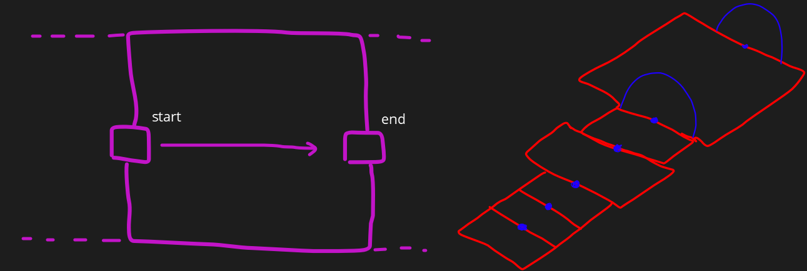
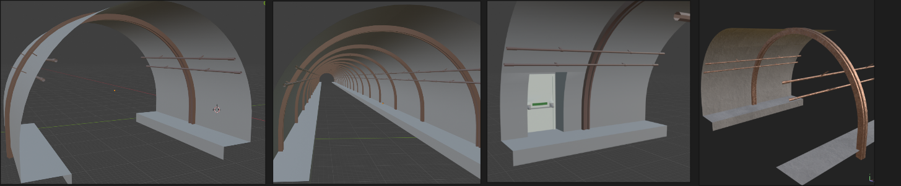
Given our project is aiming to be very atmospheric, the Unity High Definition Render Pipeline is something we wanted to utilize,
particularly looking into its volumetric fog effects for our games tunnel sequences. Unfortunately its performance was not suitable for VR.
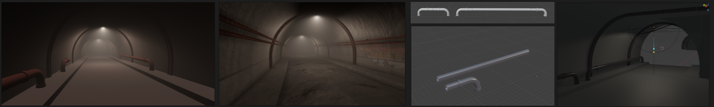
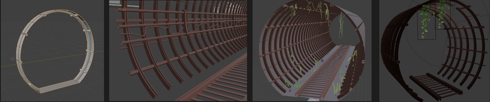
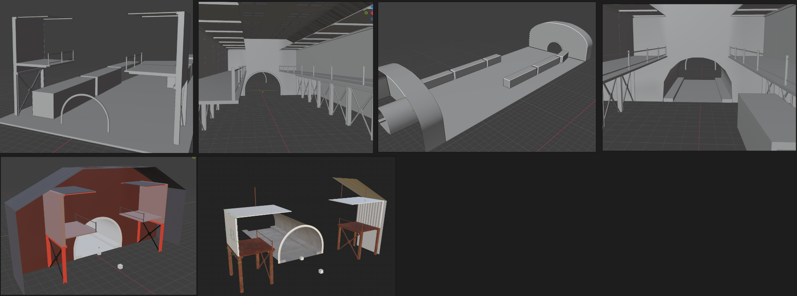
Stations
Creating modular subway station tiles
Similar to the tunnel segments, we followed a modular approach to creating stations.
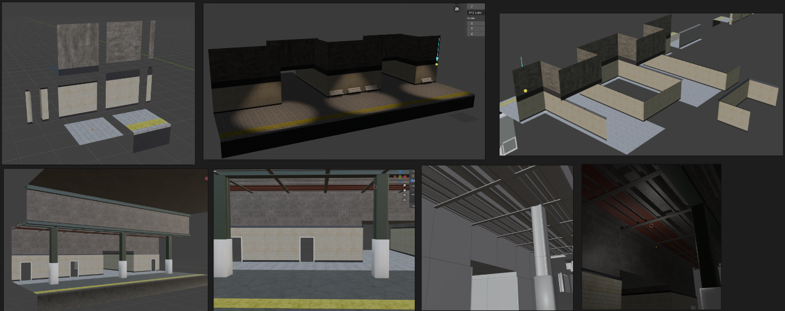
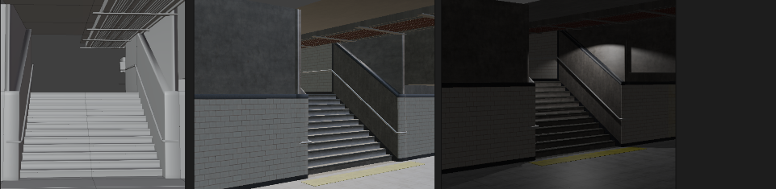
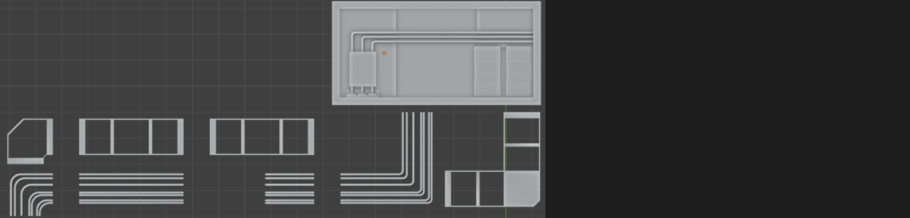
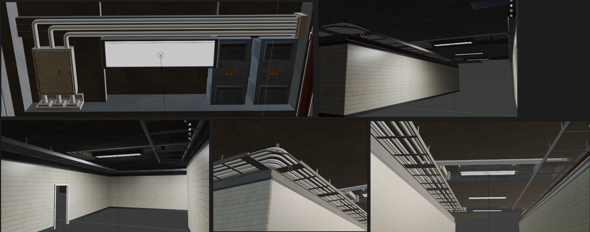
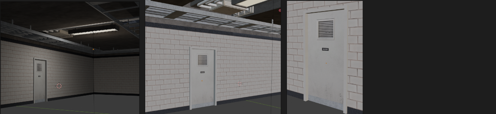
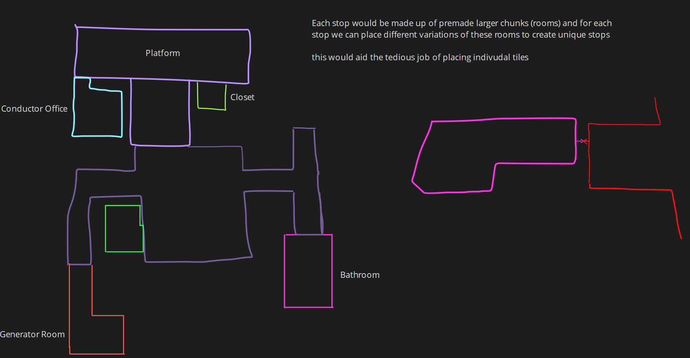
Props
Filling out the space
To convey the unmaintained nature of the subway stations, we decided small rubbish items should litter the grounds.
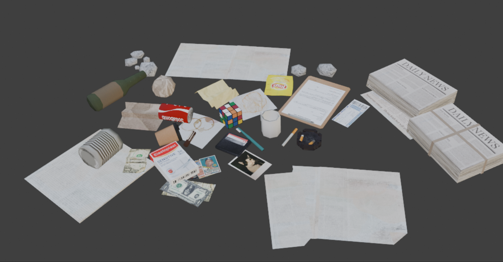
Given the quantity of rubbish our environment required, optimizations needed to be considered.
Aiming for the smallest rendering overhead, I ensured that each model had a very low vertex count
while also utilizing a texture atlas allowing for everything to be drawn in a single draw call.
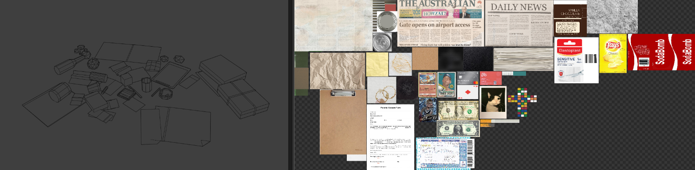
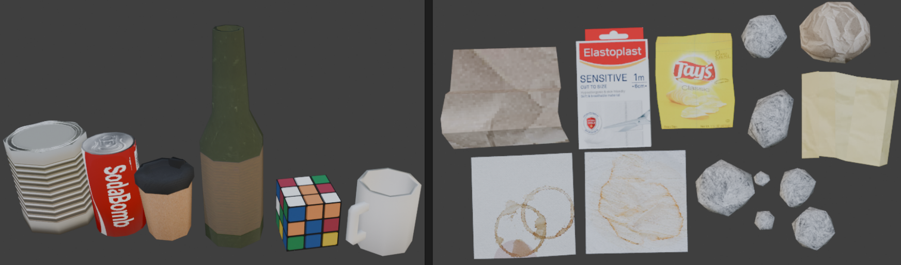
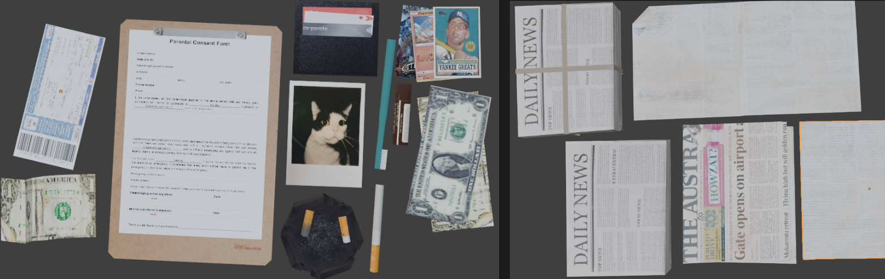
The blast door was intended to close off the tunnel at each station, locking the player inside.
Unfortunately this idea was scrapped.
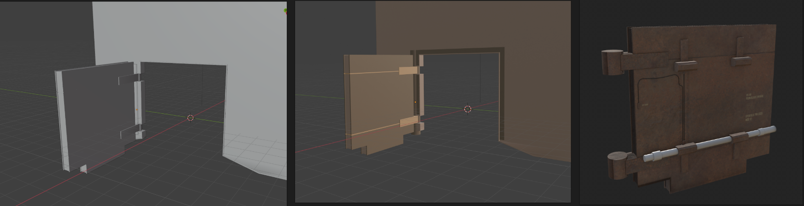
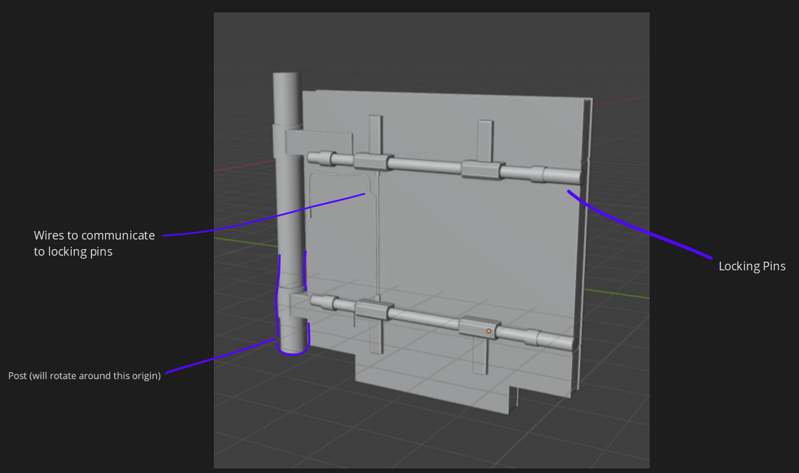
Something discussed briefly as a group was the motivation for your actions,
"Why does the player need to stop at every station?"
Our idea was that at every stop the player must repair/maintain the train (whether that be refueling, repairing an electrical fault, etc...) in order to keep progressing. To create urgency we also discussed introducing a timer of sorts, meaning the player could only stay at a station for X amount of time, or something catastrophic would happen.
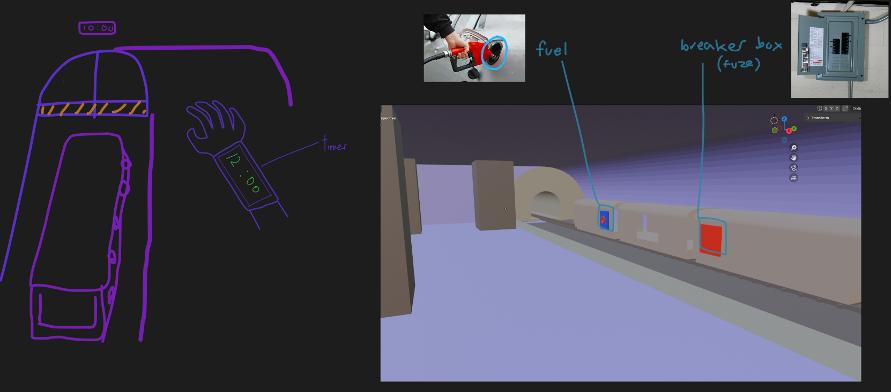
"Why does the player need to stop at every station?"
Our idea was that at every stop the player must repair/maintain the train (whether that be refueling, repairing an electrical fault, etc...) in order to keep progressing. To create urgency we also discussed introducing a timer of sorts, meaning the player could only stay at a station for X amount of time, or something catastrophic would happen.
The elevator was created to be purely decorative (out of order), being placed in the walls of the station. It was made primarily to both explore the TexTools texturing
workflow taught in the recordings and better familiarize myself with Substance Painter and its generative abilities.
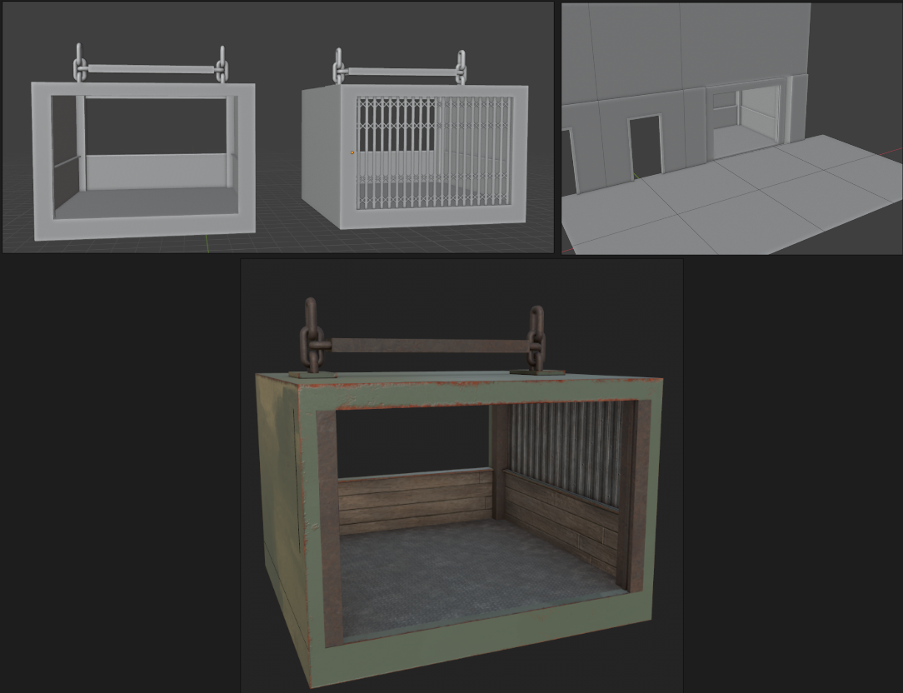
Lighting
To complete the scene, another group member and I illuminated our enviroment.
We settled for cold spot lights to litter the stations and a warm well lit train interior. Additionally I created a
bright red industrial light to illuminate the tunnels.
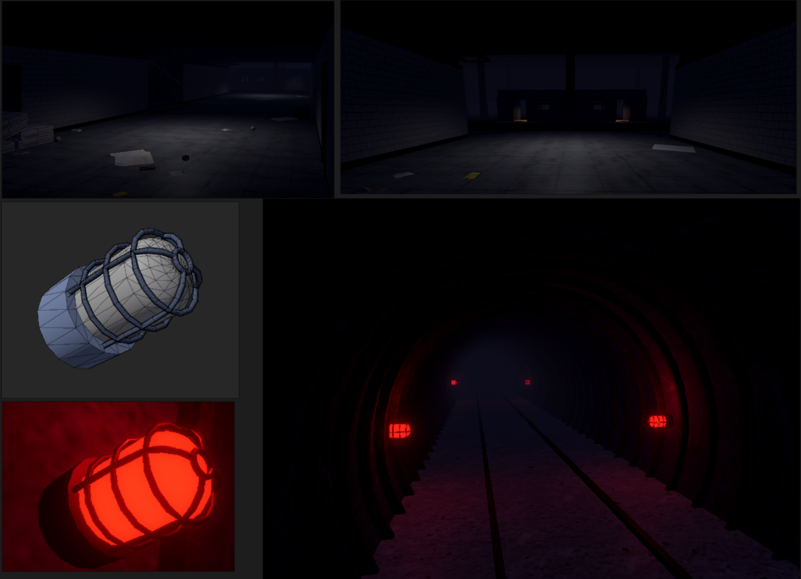
Because volumetric fog was not available, I instead configured a simple distance based fog which proved to be very effective.
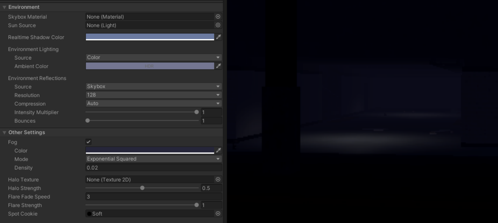
Audio
Sounds FX & Ambience
With sound playing a huge role in creating an immersive experience, I chose to explore looping atmospheric sounds
for our environment, Additionally I created a variety of one shot sound effects to be played on a per event basis.
All the audio produced for the project was created/manipulated using Ableton Live
Additional to gameplay/environmental sounds, We planned the game would have some sort of ending with associated music.
Though this ended up being out of the projects scope, it was still a fun idea to experiment with.
Music
Atmospheric
One Shot
[Happy Ending Demo]
[Ambience Demo]
[LOOP Station Ambience]
[LOOP Train Rumble]
[Rattling Pipes (Recorded)]
[Blast Door Closing]
[Blast Door Closing (Variant)]
[Torch Crank Demo]
[Train Door Open]
[Train Door Close]
Given the tedious nature of managing Audio Sources in Unity, I reused and enhanced an existing AudioManager that I created for an earlier project.
The AudioManager allows one shot sound effects to be played programmatically. This script utilizes a pool of objects which fill the required sounds needs (position, volume, pitch)
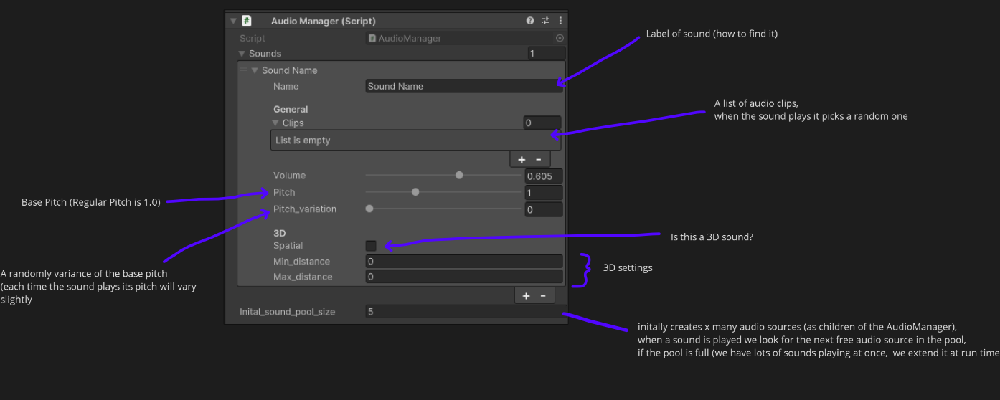
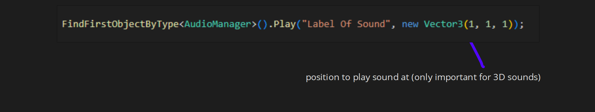
In addition to one shot sounds, we needed a way seamlessly introduce and remove looping audio tracks.
For example, when the player enters the station, ominous ambience should fade in. Or when the train is in motion, a rhythmic rumble should play to communicate the train on the tracks.
the Looping Audio Manager addresses these issues, enabling us to programmatically fade in and out looping sounds with a single function call. Additionally, to provide variation each loop can be configured to modulate its volume over time.
For example, when the player enters the station, ominous ambience should fade in. Or when the train is in motion, a rhythmic rumble should play to communicate the train on the tracks.
the Looping Audio Manager addresses these issues, enabling us to programmatically fade in and out looping sounds with a single function call. Additionally, to provide variation each loop can be configured to modulate its volume over time.